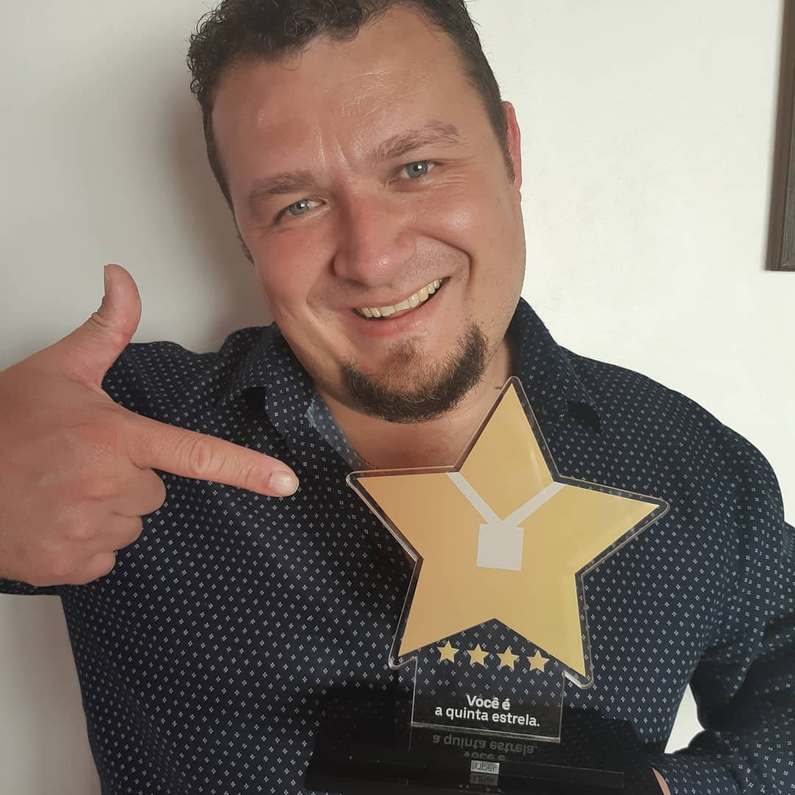
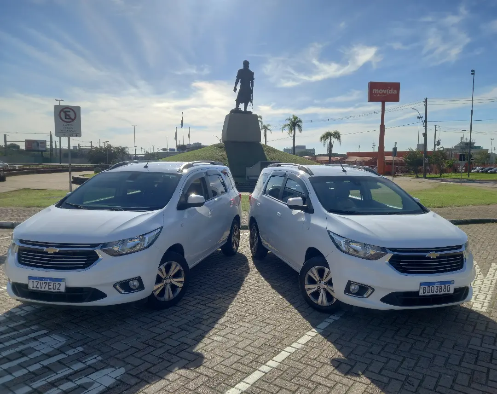
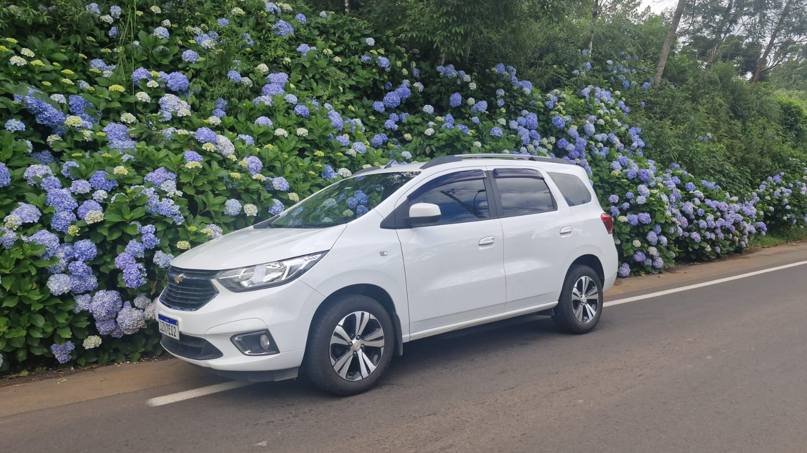
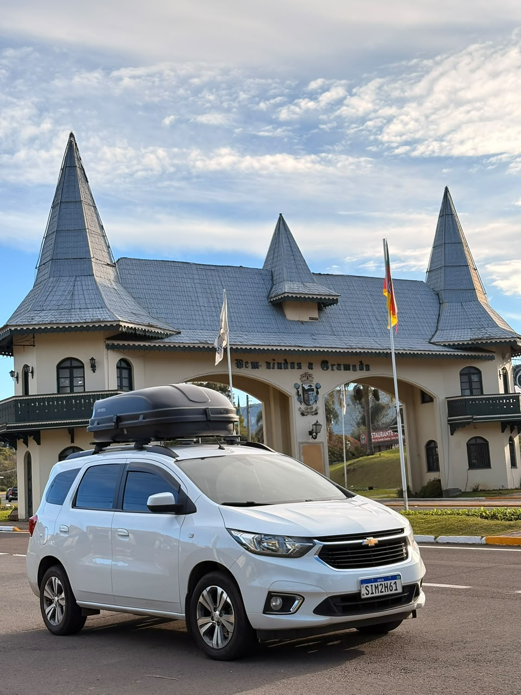
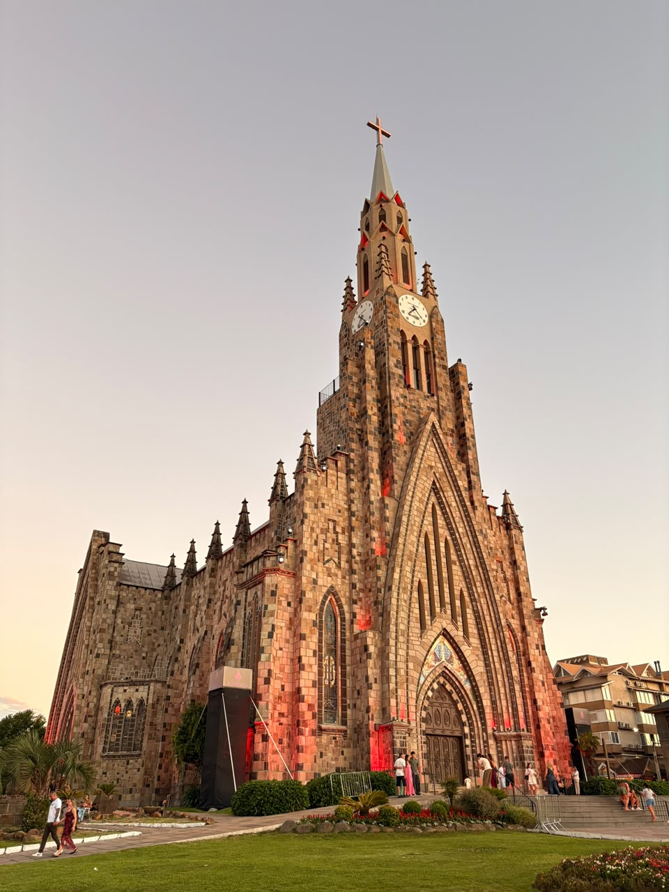
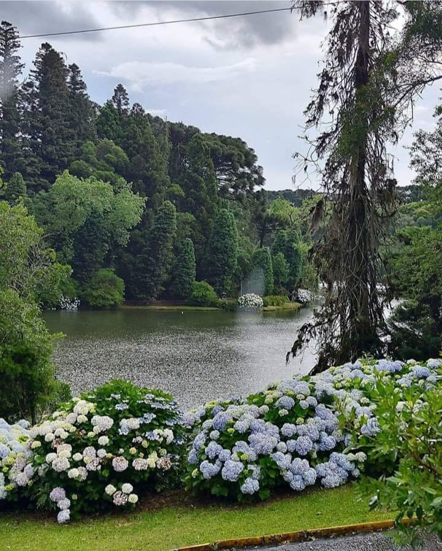
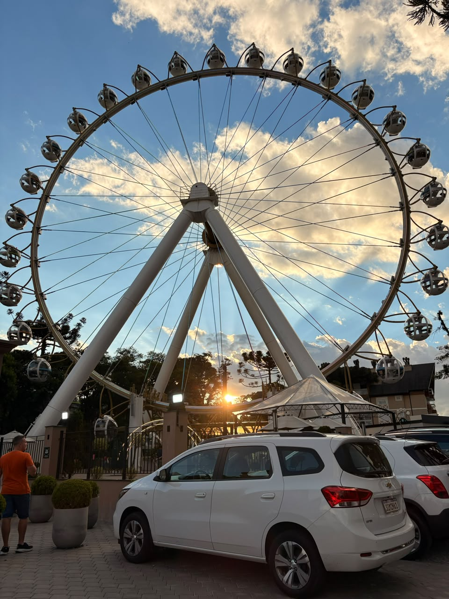
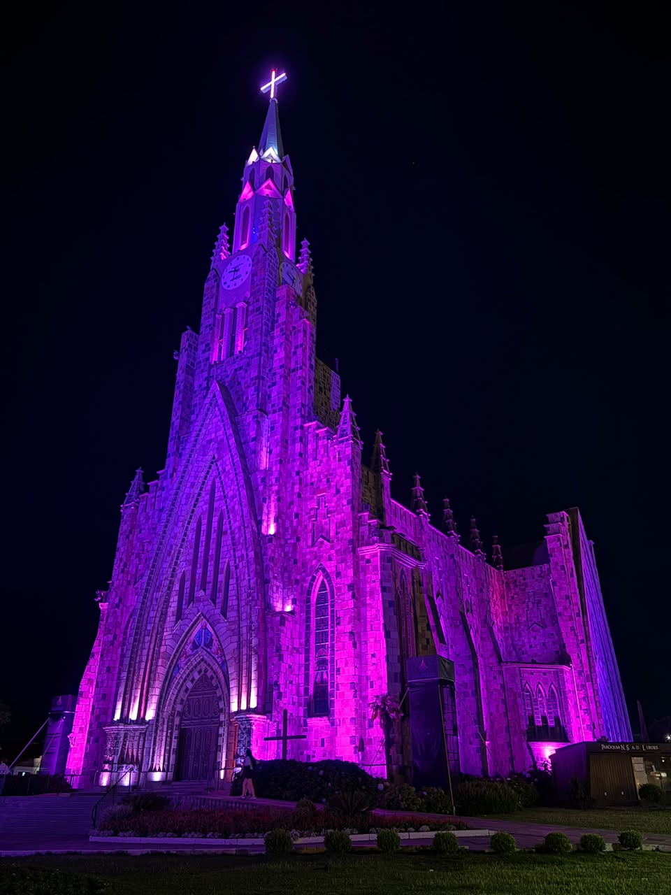
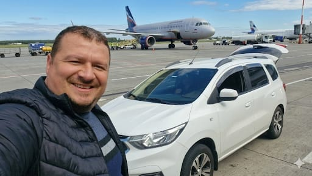
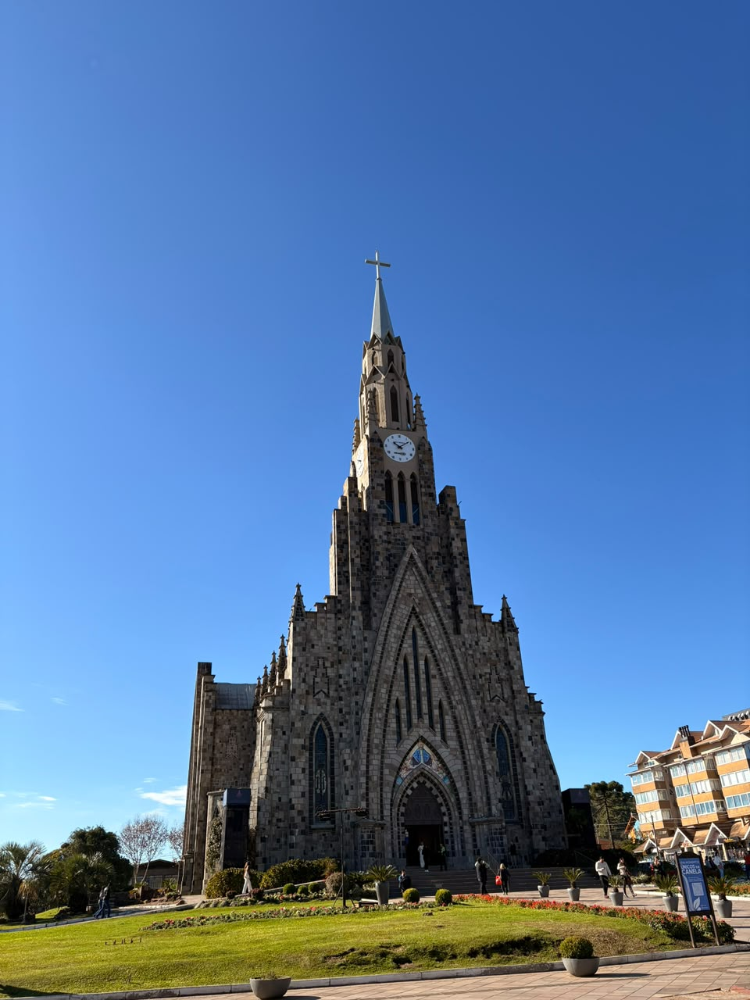

Sua melhor opção em transporte privativo
Atendimento exclusivo e cuidadoso para você viajar no seu ritmo, com atenção a cada detalhe.
Sua viagem começa com tranquilidade
Privativo | Atendimento 24h
Transfer privativo em Chevrolet Spin, sedan ou SUV, com motorista particular do Aeroporto Salgado Filho a Gramado — ou no retorno a Porto Alegre. Atendimento 24 horas mediante reserva.
Atendimento personalizado do embarque ao destino.
Atendimento exclusivo e cuidadoso para você viajar no seu ritmo, com atenção a cada detalhe.
Motorista com mais de 15 anos de experiência nas estradas da região e compromisso com seus horários.
Desfrute a viagem com conforto e praticidade. Consulte um orçamento sem compromisso.
A estrada também faz parte da viagem
Da chegada ao Aeroporto Salgado Filho ao seu destino na Serra Gaúcha — ou no trajeto de volta a Porto Alegre —, você viaja em um veículo reservado para você e seu grupo. Combinamos pelo WhatsApp os detalhes, a disponibilidade e o valor antes da confirmação. O tempo de viagem pode variar conforme o trânsito, o clima e a rota.

Conforto em cada quilômetro
Chevrolet Spin, sedan ou SUV com motorista particular. Para grupos fechados, consulte também a disponibilidade de van.

Veículos preparados com atenção para o seu transfer.

Uma viagem privativa e confortável pela Serra Gaúcha.
Fotos dos veículos da frota LaTranslados. Consulte disponibilidade e configuração ao solicitar seu orçamento.
Pelo caminho







Antes de embarcar
Veja como funciona o transfer entre o Aeroporto Salgado Filho e Gramado. Se preferir, combine os detalhes diretamente pelo WhatsApp.
Não. O veículo fica reservado para você e para as pessoas do seu grupo durante o trajeto combinado.
O serviço pode ser feito em Chevrolet Spin, sedan ou SUV. Também há opção de van para grupos fechados, sempre em transfer privativo. Consulte a disponibilidade ao solicitar seu orçamento.
Sim. O atendimento funciona 24 horas mediante reserva. Fazemos o trajeto do Aeroporto Salgado Filho, em Porto Alegre, até Gramado e também o retorno ao aeroporto.
O trajeto tem aproximadamente 120 km. O tempo pode variar conforme o trânsito, o clima e a rota.
Chame pelo WhatsApp e informe a data, o horário ou voo, o ponto de embarque, o destino e o número de passageiros. A disponibilidade e o valor são combinados antes da confirmação.
Viajar bem é melhor quando compartilhado
Atendimento atencioso, paciência e segurança fazem parte de cada viagem.
“Lauri se tornou um amigo entre idas e vindas POA x Gramado, super atencioso, conhece os melhores restaurantes da região a caminho do destino, boas referências da região, sem contar como é um bom motorista. Sempre o indicamos para amigos que vão. Até dos capixabas!”
“O Lauri fez toda a diferença na nossa viagem! Foi muito além de um simples serviço de transfer. Em pouco tempo parecia que estávamos com um amigo que conhecíamos há anos, pela forma atenciosa e acolhedora com que nos tratou.
Com certeza recomendamos o trabalho do Lauri para quem busca um atendimento de confiança, humano e de alta qualidade!”
“Uma experiência marcante com um atendimento excelente. O Lauri é de um profissionalismo incrível, educado, simpático, paciente e muito gente boa. Recomendo com toda certeza.”
“Uma experiência excelente. Lauri super gente boa... Educado, experiente. Valeu a pena. Super indico.”
“Um atendimento impecável! Recomendo a todos que precisarem de um transfer, profissional e também amigo, dando dicas ao usuário e sempre com bom humor! Se foi prometido 100, entregou 150. Obrigado, Lauri!”
“Serviço impecável! Uma super recomendação pra quem precisa de transfer de Porto Alegre a Gramado. Tivemos uma experiência muito boa, pontualidade, educação e cordialidade!! Além de várias dicas!!”